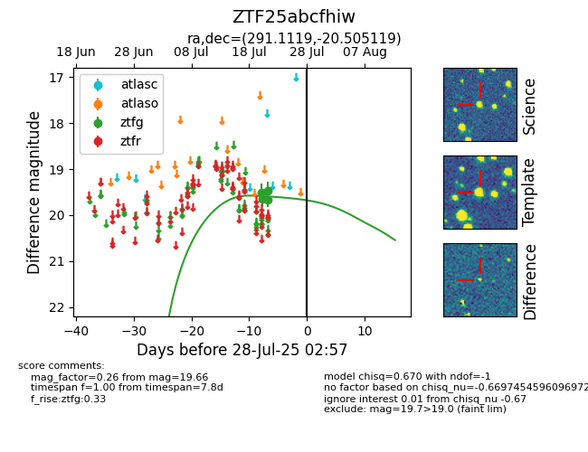

Target ZTF25abcfhiw at 2025-08-06 17:45, see:
FINK: fink-portal.org/ZTF25abcfhiw
Lasair: lasair-ztf.lsst.ac.uk/objects/ZTF25abcfhiw
ALeRCE: alerce.online/object/ZTF25abcfhiw
alt names
ZTF25abcfhiw (ztf,fink)
coordinates:
equatorial (ra, dec) = (291.1119,-20.50512)
galactic (l, b) = (17.8121,-16.22306)
photometry
last ztfg=19.66
4 ztfg detections
